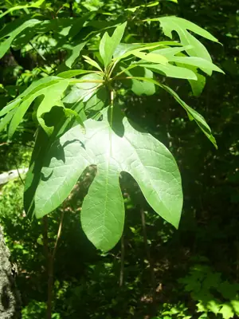

pranet · 出典付きの植物図鑑
サッサフラス
Sassafras albidum (Nutt.) Nees · Lauraceae

サッサフラス は、クスノキ科サッサフラス属に分類される落葉高木の1種である。サッサフラスノキともよばれる。葉は互生、無裂または2–3裂する（図1）。雌雄異株（雄花と雌花が別の木につく）であり、花期は春、葉が展開する前に緑黄色の小さな花からなる花序がつく（図1）。果実は核果、晩夏に青黒く熟す。北米東部に分布し、先駆樹（植生遷移の初期段階に侵入する木）の性質をもつ。芳香があり、香辛料や香料、薬用にしばしば用いられる。ただし、根の精油主成分であるサフロールには肝毒性などがあり、使用禁止とされていることが多い。
出典: Wikipedia 日本語版「サッサフラス」 · CC BY-SA 4.0
異名: Laurus albida Loudon ex Meisn., Laurus albida Nutt., Laurus diversifolia Stokes, Laurus salsafraz Noronha, Laurus sassafras L., Laurus variifolia Salisb., Persea sassafras (L.) Spreng., Sassafras laurus Macloskie, Sassafras officinale T.Nees & C.H.Eberm., Sassafras officinalis T.Nees & C.H.Eberm., Sassafras officinarum J.Presl, Sassafras rubrum Raf., Sassafras sassafras (L.) H.Karst., Sassafras triloba Raf., Sassafras variifolium Kuntze, Tetranthera albida (Nutt.) Spreng.
同定や利用は自己責任でお願いします。この図鑑だけを根拠に野生の植物を食べないでください。
出典
- 学名: World Flora Online Plant List 2026-06 · CC0 1.0
- 名前: Wikipedia の記事名と Wikidata · CC0 1.0（Wikidata）。記事名は事実
- 説明: Wikipedia 日本語版「サッサフラス」 · CC BY-SA 4.0
- 食用・毒性: World Checklist of Useful Plant Species (Diazgranados et al. 2020, RBG Kew) · CC BY 4.0
- 分布: World Checklist of Vascular Plants (WCVP), RBG Kew, version 2026-06-04 · CC BY 3.0
このページは pranet のデータから自動生成しています。コードは MIT、データは項目ごとのライセンス（説明）。